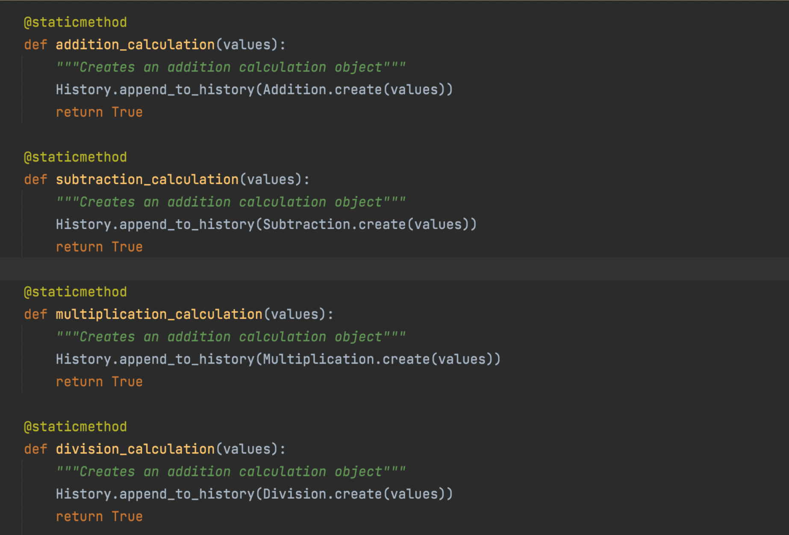

SOLID - Object Oriented Design
Understanding the SOLID Concepts.
SOLID is actually an acronym that represents a set of design principles in object-oriented programs which allows code to be written in a way that is logical and easily readable by individuals. This in turn, allows code to be more scalable for when someone wants to come back and change something. In order, the principles in the SOLID acronym means: Single Responsibility; Open-Closed; Liskov Substitution; Interface Segregation; and Dependency Inversion. Let's go through the principles one by one.
Single Responsibility Principle
The Single Responsibility Principle is that a class should only have one task. In programming, it can be easy to load all the methods to handle a project within one class. However, when creating scalable code, it's easier to organize and alter tasks as the needs of program change, and expand. In the Calculator program, we can see how single responsibility principle is used by looking at any of our operation classes. Below is the multiplication class.
Here we can see that this class is solely responsible for creating the multiplication object, and storing the values passed to it from the Calculation function. If the get_result method is called, then it will return the product of the values.
Open-Closed Principle
The Open-Close Principle describes that classes, modules, and functions should be open to extension, but closed for modification. This means that the function of a class or software entity can be extended without altering existing code. This improves scalability since the entire code does not need to be reviewed upon making a change, and reduces the probability of bugs. This code demonstrates the open-closed principle through the calculation class of the calculator.
Let's say that we wanted to add another function to the calculator called power. To do so, we would need to extend the facade to add the power calculation that calls to the history, and from the history calls to the power class, which is a subset of the calculation class, as the other operations are. Adding the power class would not cause any change to any of the existing code, and new methods can simply be added at the end of each class.
Liskov Substitution Principle
The Liskov Substitution Principle is closely tied into the inheritance principle of object-oriented programming. It states that any class derived from a parent class should be able to substitute in place of that parent class. In essence, this is stating that a subclass should be able to use any and all the methods or variables passed to it from the parent class. This is important because it prevents hard-to-track bugs from occurring, and it ensures that the parent class is generic enough to be reusable with other child classes. In the calculator program, we can see this principle used between the calculation class and any of the subclasses.
Here, we can see that the Addition methods makes use of all the qualities of the Calculation class:
- The addition class uses the "create" method to create an addition object
- The values passed to the parent are converted to a list that is saved to the Addition object
- The Addition class uses the values to perform its unique function
Interface Segregation
Interface segregation principle is about keeping the interfaces separated. In a simpler sense, this means that it is better to create many smaller, more specific interfaces rather than one large, general purpose interface. This prevents extra, or unneeded functionality to be passed, and similar to the Liskov-substitution principle, will lead to minimal bugs. In our calculator program, we can see this by analyzing how the operations are organized. We can see that even though each class inherits values in the same format, since they call have calculation as a parent class, each operation is split up into its own class and very specific interface. In comparison, there could have been one large operation class called "operations" with methods that had each operation as its own method. It would look along the lines of:

Dependency Inversion
Dependency Inversion Principle describes that a high level module should not depend on a low level module and instead, they should both be based in abstraction. This means that modules show have some amount of fluidity where they demonstrate abstraction and call methods from another class to perform a specific function. This is closely related to the Open Close Principle because code should be written in a way that it can be extended and not be 'held hostage' by a specific data structure. This is demonstrated in the calculator program by the lack of "if" statements testing against a data type. Specifically, we can see this in the history class and how it utilizes abstraction to be robust.
As we can see, these functions of the history class demonstrate abstraction, and the dependency inversion principle. They satisfy a single task, appending a specific operation to the calculation history list, but also are open to change. If the operations were to change how they function; like instead of passing an object, they passed a dictionary with the operation and value; the method would still be able to function and create a list of dictionaries.